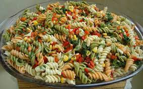

Italian Deli Pasta Salad

Description
This pasta salad has all my favorite things from the Italian deli - a trio of meats, a mix of cheeses, and giardiniera. I like to switch it up and use other meats like prosciutto, hot calabrese, or mortadella. Giardiniera comes in mild and hot varieties; use whichever you prefer. A good-quality Italian dressing makes a difference too!
Ingredients:
- 1 (16 ounce) package rotini or fusili pasta
- 2 cups cherry tomatoes, halved
- 8 ounces provolone cheese, cubed
- 4 ounces Genoa salami, chopped
- 4 ounces hot capacola sausage, roughly chopped
- 1 medium red onion, minced
- 1 (8 ounce) can black olives, drained
- 1/2 cup giardiniera
- 1/4 cup grated Parmesan cheese
- 1 (16 ounce) bottle Italian salad dressing
Steps:
- Bring a large pot of lightly salted water to a boil; cook rotini at a boil until tender yet firm to the bite, 8 to 10 minutes. Drain and rinse with cold water.
- Combine pasta, tomatoes, provolone cheese, salami, pepperoni, capicola, onion, olives, giardiniera, Parmesan cheese, and 1/2 of the Italian dressing in a large bowl. Stir to combine and refrigerate for at least 1 hour.
- Before serving, add some or all of the remaining dressing.